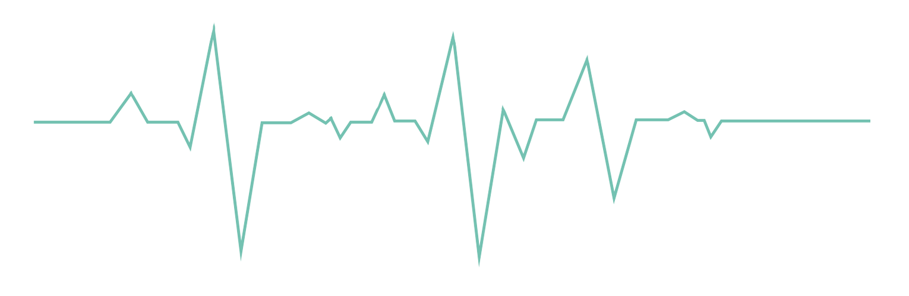
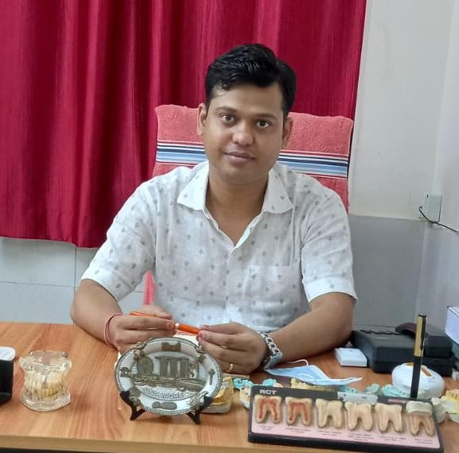

Doctors at work
Satisfied patients
Bed facility

Established in 1974 , Sewa Sadan in Daltonganj is one of the most renowned Gynaecologist & Obstetrician Doctors in the area. Countless locals have placed immense trust in the practitioner over the years. Sewa Sadan is situated at Daltonganj, which is easily accessible through various modes of transport.





People with COVID-19 have had a wide range of symptoms reported – ranging from mild symptoms to severe illness.
Learn moreThis page includes advice from WHO on ways to protect yourself and prevent the spread of COVID-19.
Learn more
Researchers have investigated the effects of 2-3 cups daily coffee intake on acute kidney injury risk.
Learn more